TEB
概念
TEB指线程环境块 该结构体包含进程中运行线程的各种信息 进程中每个线程都对应一个TEB结构体 不同OS中TEB结构体形态略微不同
定义
结构体中有非常多的成员，其中用户模式调试中起着重要作用的成员有两个：1
2
3+0 NtTib : _NT_TIB
...
+0X30 ProcessEnvironmentBlock : Ptr32_PEB
偏移0x30处的ProcessEnvironmentBlock是指向PEB（进程环境块）结构体的指针
偏移0处的_NT_TIB结构体内容如下1
2
3
4
5
6
7
8
9
10
11
12typedef struct _NT_TIB {
struct _EXCEPTION_REGISTRATION_RECORD *ExceptionList;
PVOID StackBase;
PVOID StackLimit;
PVOID SubSystemTib;
union {
PVOID FiberData;
DWORD Version;
};
PVOID ArbitraryUserPointer;
struct _NT_TIB *Self;
};
ExceptionList成员指向_EXCEPTION_REGISTRATION_RECORD结构体组成的链表，用于Windows OS的SEH（异常处理机制）
Self成员是结构体的自引用指针
访问方法
内核模式下可以直接查看内核的内存，但是用户模式下由于没有相关权限，所以只能通过OS提供的API来访问
Ntdll.NtCurrentTeb()
Ntdll.NtCurrentTeb()用来返回当前线程的TEB结构体的地址 我们接下来用OD看看函数内部如何实现的 我们打开notepad.exe
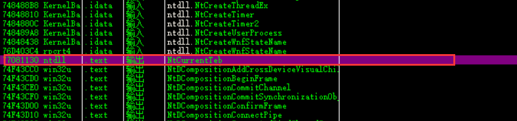
我们跳转到该API代码处
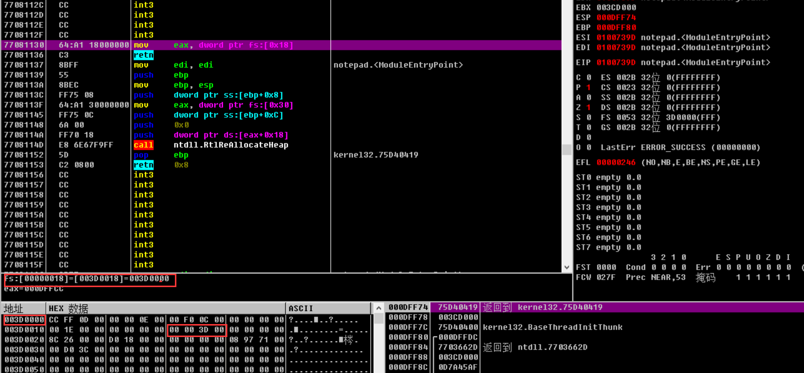
我们可以看到该API函数代码很简单 只返回FS:[18]的值 FS:[18]的实际地址为003D0018 内存中进入该地址 发现值为003D0000 我们仔细看发现TEB结构体的内存（003D0000）与FS段寄存器所指的段内存的基址是一样的 也就是说 TEB与FS段寄存器有着某种关联
FS段寄存器
FS段寄存器就是专门用来指示当前线程的TEB结构体的
具体方法为
FS寄存器指示SDT的索引，其中存放着TEB结构体的地址
SDT位于内核内存区域，地址存放在GDTR（全局描述符表寄存器）中
因此GDTR+FS就可以得到TEB结构体的指针了
从而有
FS:[0x18] = FS:0
（+0x18处就是self指针）
FS:[0x30] = &PEB
PEB结构体常用于反调试 接下来将讲解
FS:[0] = &SEH
SEH是windows的结构化异常处理机制 常用于反调试技术
PEB
概念
PEB（Process Environment Block，进程环境块）存放进程信息，每个进程都有自己的PEB信息。位于用户地址空间。
PEB地址可以通过函数PsGetProcessPeb(EPROCESS)来获得，也可以通过EPROCESS基地址加偏移0x1b0(x86)来获得。
访问方法
在前面我们已经知道 TEB.ProcessEnvironmentBlock成员位于距离TEB结构体Offset 30的位置处 我们有以下方法获取地址
#1：直接获取PEB地址1
MOV EAX,DWORD PTR FS:[30] ; FS[30]=address of PEB
#2：先获取TEB 再通过TEB.ProcessEnvironmentBlock成员（+30偏移）获取PEB地址1
2MOV EAX,DWORD PTR FS:[18] ; FS[18]=address of TEB
MOV EAX,DWORD PTR DS:[EAX+30] ; DS[EAX+30]=address of PEB
接下来用OD打开一个exe文件 在EP代码处输入如图指令
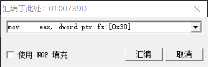
然后单步执行 EAX寄存器存入FS:[30]的值 即PEB结构体的地址
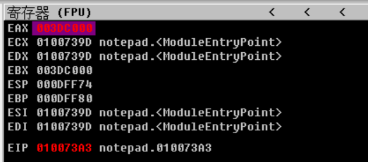
我们在数据窗口看看PEB的地址
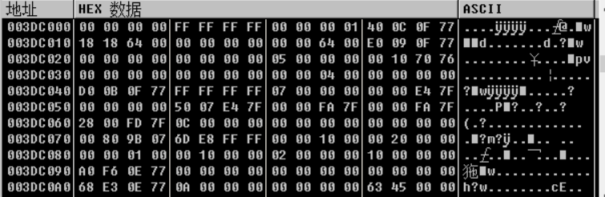
PEB结构体定义
1 | typedef struct _UNICODE_STR |
PEB的重要成员
1 | +002 BeingDebugged |
PEB.BeingDebugged
Kernel32.dll中有个名为Kernel32！IsDebuggerPresent（）的API 但普通的应用程序开发在并不常用
该API函数用来判断当前进程是否处于调试状态 并判断结果 该API通过检测PEB.BeingDebugged成员来确定是否处于调试状态（是为1 否为0）该API代码：
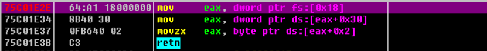
该值通常用于反调试技术 检测该值 若进程处于调试中 就终止调试
PEB.ImageBaseAddress
PEB.ImageBaseAddress成员用来表示进程的ImageBase
GetModuleHandle（）API用来获取ImageBase1
2
3HMODULE WINAPI GetModuleHandle(
_In_opt_LPCTSTR lpModuleName
);
向lpModuleName参数赋值为NULL 调用GetModuleHandle()函数将返回进程被加载的ImageBase GetModuleHandle()的部分API代码：
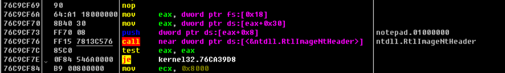
向lpModuleName参数赋值为NULL值后 调用GetModuleHandle（）函数时执行如图代码 我们可以看到 PEB.ImageBaseAddress成员的值被设置到EAX寄存器
PEB.Ldr
PEB.Ldr成员是指向_PEB_LDR_DATA结构体的指针 代码如下：1
2
3
4
5
6
7
8
9
10typedef struct _PEB_LDR_DATA //, 7 elements, 0x28 bytes
{
DWORD dwLength;
DWORD dwInitialized;
LPVOID lpSsHandle;
LIST_ENTRY InLoadOrderModuleList;
LIST_ENTRY InMemoryOrderModuleList;
LIST_ENTRY InInitializationOrderModuleList;
LPVOID lpEntryInProgress;
} PEB_LDR_DATA, *PPEB_LDR_DATA;
当模块（DLL）加载到进程后 通过PEB.Ldr成员可以直接获取该模块的加载基地址 所以PEB.Ldr是非常重要的成员 _PEB_LDR_DATA 结构体成员有3个_LIST_ENTRY类型的成员（LIST_ENTRY InLoadOrderModuleList;LIST_ENTRY InMemoryOrderModuleList;LIST_ENTRY InInitializationOrderModuleList;）_LIST_ENTRY结构体的定义如代码：
1 | typedefstruct _LIST_ENTRY{ |
我们可以看到_LIST_ENTRY结构体提供了双向链表机制 链表中保存的是_LDR_DATA_TABLE_ENTRY结构体的信息 代码如下：1
2
3
4
5
6
7
8
9
10
11
12
13
14
15
16typedef struct _LDR_DATA_TABLE_ENTRY
{
//LIST_ENTRY InLoadOrderLinks;
LIST_ENTRY InMemoryOrderModuleList;
LIST_ENTRY InInitializationOrderModuleList;
PVOID DllBase;
PVOID EntryPoint;
ULONG SizeOfImage;
UNICODE_STR FullDllName;
UNICODE_STR BaseDllName;
ULONG Flags;
SHORT LoadCount;
SHORT TlsIndex;
LIST_ENTRY HashTableEntry;
ULONG TimeDateStamp;
} LDR_DATA_TABLE_ENTRY, *PLDR_DATA_TABLE_ENTRY;
每个加载到进程中的DLL模块都有与之对应的_LDR_DATA_TABLE_ENTRY结构体 这些结构体互相链接 最终形成_LIST_ENTRY双向链表 需要注意的是：_PEB_LDR_DATA结构体中存在的3种链表 也就是说 存在多个_LDR_DATA_TABLE_ENTRY结构体 并且有三种链接方法可以将它们链接起来
PEB.ProcessHeap&PEB.NtGlobaFlag
PEB.ProcessHeap&PEB.NtGlobaFla常用于反调试技术 若处于调试状态 成员就持有特定值
SEH
windows 提供的异常处理机制实际上只是一个简单的框架。我们通常所用的异常处理（比如 C++ 的 throw、try、catch）都是编译器在系统提供的异常处理机制上进行加工了的增强版本。这里先抛开增强版的不提，先说原始版本。
原始版本的机制很简单：谁都可以触发异常，谁都可以处理异常（只要它能看得见）。但是不管是触发还是处理都得先注册。系统把这些注册信息保存在一个链表里，并且这个链表保存在线程的数据结构里。也就是说，异常所涉及的一些行为都是线程相关的。比如，线程 T1 触发的异常就只能由线程 T1 来处理，其他线程根本就不知道 T1 发生了什么事，更不会处理。等注册完毕后，线程就可以抛出或处理异常了，系统也可以做相应的管理工作了。
系统提供的管理工作简单来说包括（但不限于）：找到触发异常的线程的异常处理链表（前面注册的那个），然后按照规则对该异常进行分发，根据分发后的处理结果再进行下一步的分发或者结束处理。
SEH练习#1
先简单介绍练习示例seh.exe 该程序故意触发了内存非法访问异常 然后通过SEH机制来处理 并且使用PEB信息向程序添加简单的反调试代码 使程序在正常运行与调试运行时表现出不同的行为动作
正常运行
该程序非常简单 运行后弹出“Hello:)”字符串
调试运行
用OD打开
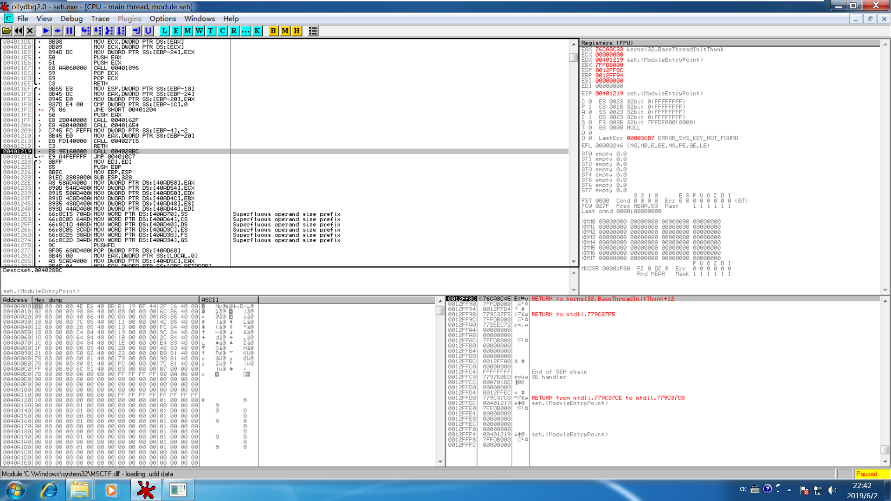
按下F9运行 发生非法访问异常后暂停调试
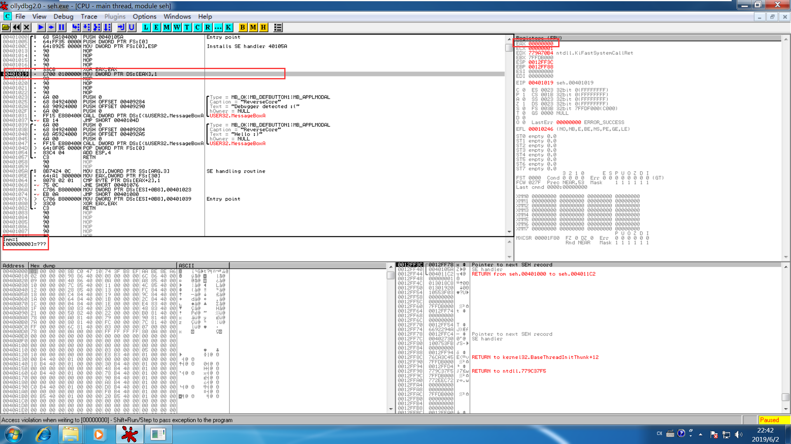
401019地址处的MOV指令用来触发异常 当前EAX寄存器的值为0 所以该指令的实际含义是向地址为0处写入1 但试图向未分配的内存地址0处写入某个值时 就会触发内存非法访问异常
在OD中查看状态窗口 如下
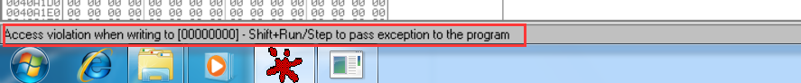
在内存0处发生写入异常 若想将异常抛给程序 请使用Shift+Run/Step
我们根据调试器的提示使用Shift+F9继续运行程序 调试开始运行弹出对话框：
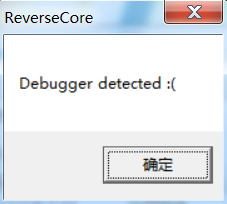
可以看到它与正常运行时弹出的对话框是不一样的 以上就是“利用SEH机制的反调试技术”
OS的异常处理方法
同一程序在正常运行和调试运行时的表现行为是不同的 这是由Winsows OS异常处理方法不同引起的
正常运行时的异常处理方法
进程运行时发生异常 OS会委托进程处理 若进程代码中存在具体的异常处理（SEH异常处理器）代码 则能顺利处理相关异常 程序继续运行 但如果进程内部没有具体实现SEH 那么相关异常就无法处理 OS就会启动默认的异常处理机制 终止进程运行
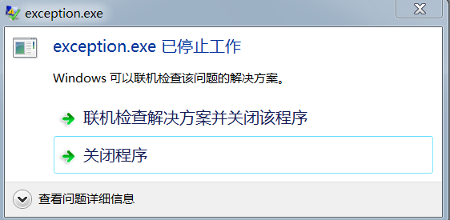
调试运行时的异常处理方法
调试运行中发生异常时，处理方法与上面有些不同。若被调试进程内部发生异常，OS会首先把异常抛给调试进程处理。调试器几乎拥有被调试者的所有权限，它不仅可以运行、终止被调试者，还拥有被调试进程的虚拟内存、寄存器的读写权限。需要特别指出的是，被调试者内部发生的所有异常(错误)都由调试器处理。所以调试过程中发生的所有异常(错误)都要先交由调试器管理(被调试者的SEH依据优先顺序推给调试器)。像这样，被调试者发生异常时，调试器就会暂停运行，必须采取某种措施来处理异常，完成后继续调试。遇到异常时经常采用的几种处理方法如下所示。
(1)直接修改异常:代码、寄存器、内存
被调试者发生异常时,调试器会在发生异常的代码处暂停,此时可以通过调试器直接修改有问题的代码 内存 寄存器等 排除异常后 调试器继续运行程序
遇到图10中的异常时，采用直接修改异常的方法进行如下处理.
●由于EAX寄存器所指的地址值错误，所以只要把EAX寄存器的值修改为有效的内存地址即可。
●由于401019地址处的代码触发了异常，使用OllyDbg的汇编( Space)或编辑( Ctrl+E) 功能将相关代码修改为NOP指令，运行后也可排除异常。
●也可以使用OllyDbg的New Origin here(Ctrl+Gray *)功能改变程序的运行路径(因为无法直接修改EIP寄存器，所以需要借助该功能修改)。
请不要随意使用这些修改方法，必须在明确知道程序错误的情形下才能使用。
(2)将异常抛给被调试者处理
如果被调试者内部存在SEH(异常处理函数)能够处理异常，那么异常通知会发送给被调试者，由被调试者自行处理。这与程序正常运行时的异常处理方式是一样的。 前面的seh.exe练习示例中，使用OllyDbg中的Shift+F7/F8/F9命令( StepInto/StepOver/Run )可以直接将当前异常抛还给被调试者。
(3) OS默认的异常处理机制
若调试器与被调试者都无法处理(或故意不处理)当前发生的异常，则OS的默认异常处理机制会处理它，终止被调试进程，同时结束调试。
异常
学习异常处理前 先了解操作系统中定义的异常
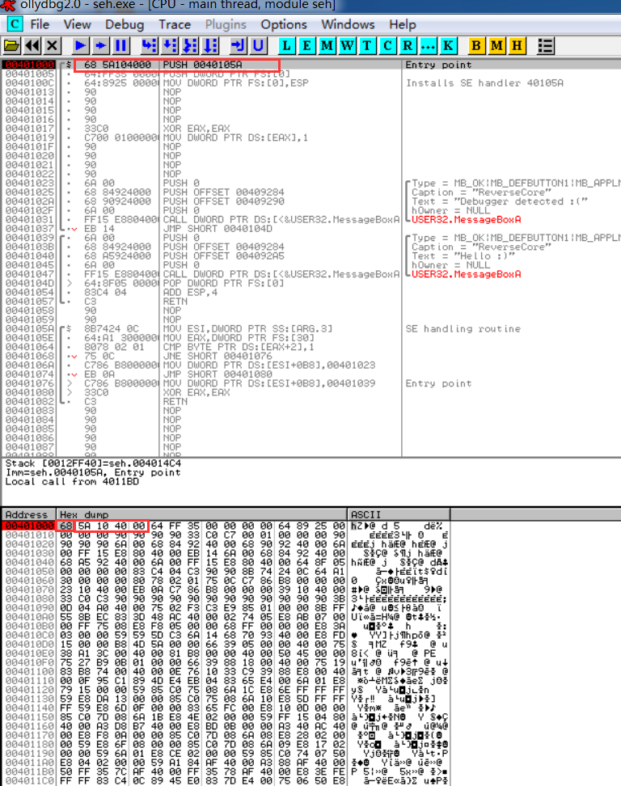
以上的调试列表 我们调试时会经常遇到5种具有代表性的异常
EXCEPTION_ ACCESS VIOLATION(0xC0000005)
试图访问不存在或者不具体访问权限的内存区域时 就会发生EXCEPTION_ ACCESS VIOLATION（非法访问异常 该异常最常见）
MOV DWORD PTR DS:[0], 1
->内存地址0处是尚未分配的区域。
ADD DWoRD PTR DS: [401000]，1
->. text 节区的起始地址401000仅具有 “读”权限(无“写” 权限)。
XOR DWORD PTR DS: [80000000]，1234
->内存地址80000000属于内核区域，用户模式下无法访问。
EXCEPTION BREAKPOINT(0x80000003)
在运行代码中设置断点后 CPU尝试执行该地址处的指令时 将发生EXCEPTION BREAKPOINT异常 调试器利用该异常实现断点功能
INT3
设置断点对应的汇编指令时INT3 对应的及其指令（IA-32）为0xcc CPU运行代码过程中若遇到汇编指令INT3 则会触发EXCEPTION BREAKPOINT异常 在OD中设置好断点后 确认该地址处是否真的会变成INT3 在OD中打开seh.exe文件 跳转到0040100处 设置好断点：
从图中可以看到，虽然401000地址处设置了断点，但是该地址处的指令并未变为INT3(汇编指令),也未由“68”变为“CC”(机器指令)。为什么跟前面讲的不一样呢?其实，这是OllyDbg耍的一个小花招。由于在O1lyDbg中按F2键设置的断点是用户用来调试的临时断点( UserTemporary Break Point ),所以不需要在调试画面中显示。在代码与内存中将用户设置的临时断点全部显示出来，反而会大大降低代码的可读性，给代码调试带来不便。换言之，实际进程内存中401000地址处的指令“68” 已经被更改为“CC”，但是为了调试方便，OllyDbg并 未将其显示出来。将进程内存转储之后可以看到更改后的CC指令,先使用PE Tools工具转储进程内存,如图下图
以seh_dump.exe文件名保存转储文件
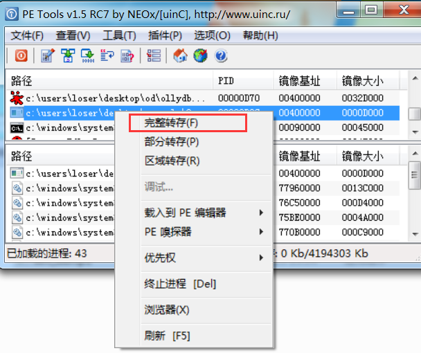
使用PEView查看00401000地址处的指令
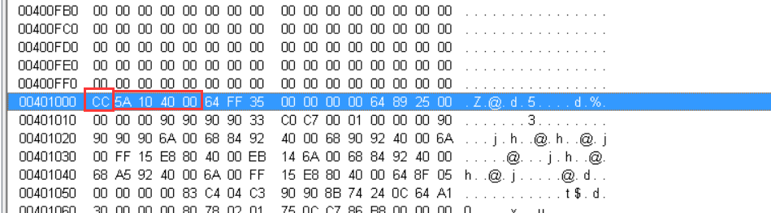
查看00401000地址处处可以看到cc指令 也就是说进程内存中的实际值为0xcc 但是OD调试器在显示时先将其更改为原来的操作码“68” 然后显示出来
以上就是断点内部工作原理，灵活运用这一原理能为程序调试带来很大便利。比如，使用Hex Editor工具打开PE文件，修改EP地址对应的文件偏移处的第一个字节为CC,然后运行该PE文件就会发生EXCEPTION BREAKPOINT异常，经过OS的默认异常处理后终止运行。若在系统注册表中将默认调试器设置为OllyDbg,那么发生以上异常时OS会自动运行01lyDbg调试器,附加发生异常的进程(第八部分中将详细讲解利用这一原理调试的方法)
EXCEPTION ILL EGAL INSTRUCTION(0xC000001D)
CPU在遇到无法解析的指令时引发该异常 比如“0FFF”指令在X86CPU中未定义 CPU遇到该指令将引发EXCEPTION ILL EGAL INSTRUCTION异常
下面用OD打开seh.exe 在EP代码处直接修改指令为0FFF 然后程序引发EXCEPTION ILL EGAL INSTRUCTION异常 暂停调试
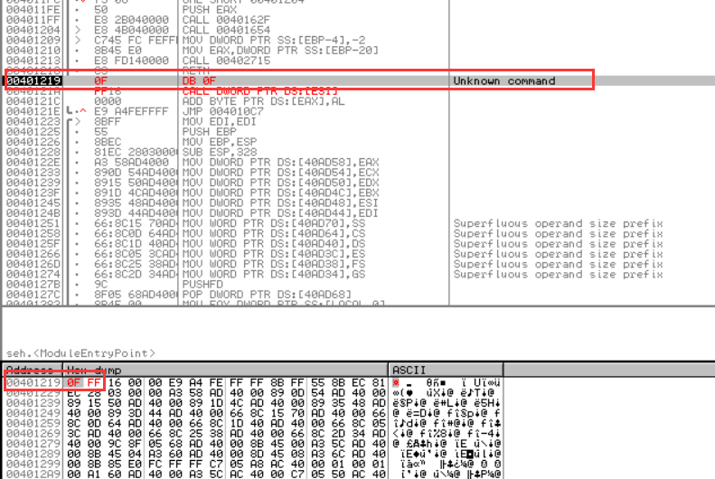
EXCEPTION INT DIVIDE BY ZERO(0xC0000094 )
INTEGER（整数）除法运算中 若分母为0 则引发EXCEPTION INT DIVIDE BY ZERO异常 编写应用程序时偶尔会引发该异常 分母为变量时 该变量在某个瞬间变为0 执行除法运算就会引发EXCEPTION INT DIVIDE BY ZERO异常 打开seh.exe 使用汇编指令在EP代码处修改代码 如图：
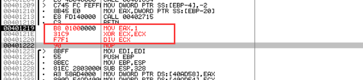
401220地址处的DIV ECX指令执行除法运算 然后将结果保存到EAX寄存器 但此时ECX寄存器的值为0 所以引发EXCEPTION INT DIVIDE BY ZERO异常 暂停运行
EXC EPTION SINGLE STEP(0x80000004 )
Single Step(单步)的含义是执行1条指令，然后暂停。CPU进入单步模式后，每执行一条指令就会引发EXCEPTION_ SINGLE STEP异常，暂停运行。将EFLAGS寄存器的TF ( Trap Flag,陷阱标志)位设置为1后，CPU就会进入单步工作模式。
SEH详细说明
SEH链
SEH是以链的形式存在 第一个异常处理器若未处理相关异常 它就会被传递到下一个异常处理器 直到被处理 从技术层面来看 SEH是由_EXCEPTION_REGISTRATION_RECORD结构体组成的链表
1 | typedef struct _EXCEPTION_REGISTRATION_RECORD { |
异常处理函数的定义
1 | EXCEPTION_DISPOSIYION_except_handler ( |
当接收到异常后，系统找到当前线程的异常链表，从链表中的第一个结点开始遍历，找到一个 EXCEPTION_REGISTRATION_RECORD 就调用它的 Handler，并把该异常(类型为 EXCEPTION_RECORD 的参数)表示传递给该 Handler，Handler 处理并返回一个类型为 EXCEPTION_DISPOSITION 的枚举值。该返回值指示系统下一步该做什么
_EXCEPTION_RECORD结构体的定义如下：1
2
3
4
5
6
7
8
9typedef struct _EXCEPTION_RECORD {
DWORD ExceptionCode; //异常代码
DWORD ExceptionFlags;
struct _EXCEPTION_RECORD *ExceptionRecord;
PVOID ExceptionAddress; //异常发生地址
DWORD NumberParameters;
ULONG_PTR ExceptionInformation[EXCEPTION_MAXIMUM_PARAMETERS];
//15
} EXCEPTION_RECORD;
异常处理的第三个指针指向CONTEXT结构体的指针 定义如下：1
2
3
4
5
6
7
8
9
10
11
12
13
14
15
16
17
18
19
20
21
22
23
24
25
26
27
28
29
30
31
32
33
34
35typedef struct _CONTEXT
{
DWORD ContextFlags // -| +00h
DWORD Dr0 // | +04h
DWORD Dr1 // | +08h
DWORD Dr2 // >调试寄存器 +0Ch
DWORD Dr3 // | +10h
DWORD Dr6 // | +14h
DWORD Dr7 // -| +18h
FLOATING_SAVE_AREA FloatSave; //浮点寄存器区 +1Ch~~~88h
DWORD SegGs //-| +8Ch
DWORD SegFs // |\段寄存器 +90h
DWORD SegEs // |/ +94h
DWORD SegDs //-| +98h
DWORD Edi //________ +9Ch
DWORD Esi // | 通用 +A0h
DWORD Ebx // | 寄 +A4h
DWORD Edx // | 存 +A8h
DWORD Ecx // | 器 +ACh
DWORD Eax //_|___组_ +B0h
DWORD Ebp //++++++ +B4h
DWORD Eip // |控制 +B8h
DWORD SegCs // |寄存 +BCh
DWORD EFlag // |器组 +C0h
DWORD Esp // | +C4h
DWORD SegSs //++++++ +C8h
BYTE ExtendedRegisters[MAXIMUM_SUPPORTED_EXTENSION];
} CONTEXT;
typedef CONTEXT *PCONTEXT;
#define MAXIMUM_SUPPORTED_EXTENSION 512
CONTEXT结构体用来备份CPU寄存器的值，因为多线程环境下需要这样做。每个线程内部都拥有1个CONTEXT结构体。CPU暂时离开当前线程去运行其他线程时，CPU寄存器的值就会保存到当前线程的CONTEXT结构体; CPU再次运行该线程时，会使用保存在CONTEXT结构体的值来覆盖CPU寄存器的值，然后从之前暂停的代码处继续执行。通过这种方式，OS可以在多线程环境下安全运行各线程
异常发生时，执行异常代码的线程就会中断运行，转而运行SEH(异常处理器/异常处理函数),此时OS会把线程的CONTEXT结构体的指针传递给异常处理函数(异常处理器)的相应参数。CONTEXT的结构体成员中有1个Eip成员(偏移量:B8)。在异常处理函数中将参数传递过来的CONTEXT.Eip设置为其他地址，然后返回异常处理函数。这样，之前暂停的线程会执行新设置的EIP地址处的代码( 反调试中经常采用这一技术，练习示例seh.exe中也采用了该技术，后面会详细分析)。在代码异常处理函数代码中 可以看到异常处理函数的返回值为EXCEPTION DISPOSITION枚举类型，下面了解一下该类型。
1 | typedef enum _EXCEPTION_DISPOSITION |
异常处理后会返回ExceptionContinueExecution（0）从发生异常的代码处继续运行 若当前异常处理器无法处理 则返回ExceptionContinueSearch（1） 将异常传递给下一个异常处理器
TEB.NtTib.ExceptionList
通过TEB结构体成员很容易的访问进程SEH链
TEB.NtTib.ExceptionList成员是PEB结构体的第一个成员 FS段寄存器指向段内存的起始地址 TEB结构体即位于此 我们可以通过以下公式获取
TEB.NtTib.ExceptionList=FS:[0]
SEH安装方法
在c语言中用try、finally和__except等术语可以容易的添加SEH 在汇编中也是一样的简单1
2
3PUSH @MyHandler ;异常处理器
PUSH DWORD PTR FS:[0] ;Head of SEH Linked List
MOV DWORD PTR FS:[0],ESP ;添加链表
看代码就容易理解了。“在程序代码中安装SEH”就是指，将自身的异常处理器添加到已有的SEH链。从技术层面讲，就是将自身的EXCEPTION REGISTRATION RECORD结构体链接到EXCEPTION_ REGISTRATION_ RECORD结构体链表。前面出现的seh.exe程序就是采用上述汇编代码添加的SEH，下面再次调试seh.exe程序以进一步了解添加SEH的方法及其工作原理。
SEH练习#2（seh.exe）
打开OD使代码运行到00401000处（main函数）
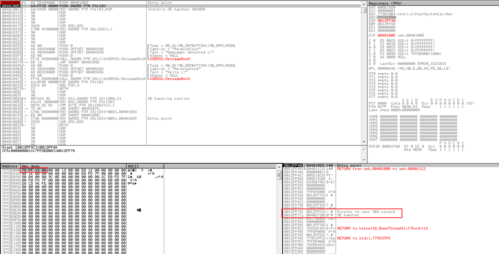
位于401000 401005 40100c处的三条指令与“SEH安装”的代码是相同的 新添加的异常处理器就是位于40105a处的异常处理函数
查看SEH链
继续运行代码到401005处 查看FS:[0]的值 其值就是SEH链的起始地址
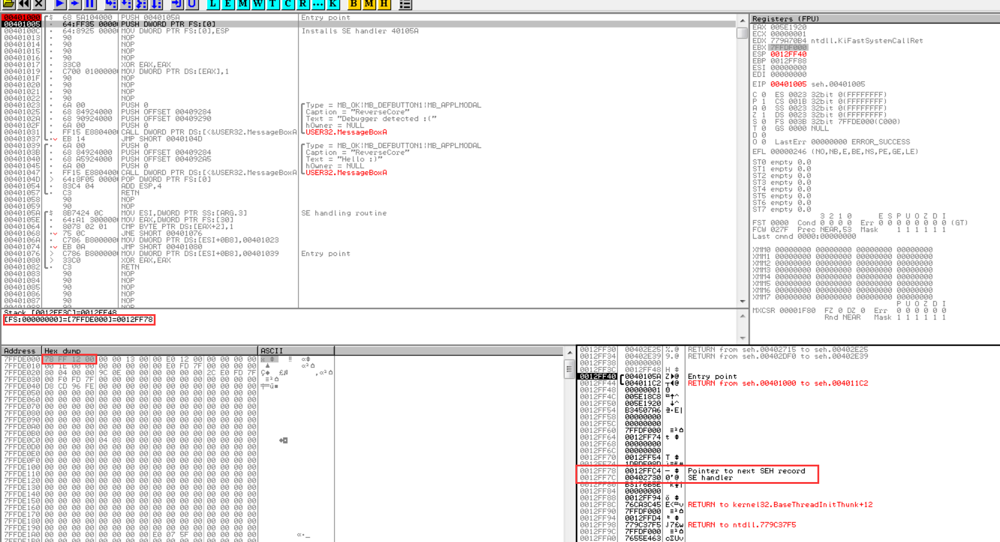
从代码信息窗口中可以看到，FS:[0]=[7FFDE000]=12FF78,其中12FF78就是SEH链的起始地址(即EXCEPTION REGISTRATION RECORD结构体链表的起始地址)。在上图的栈窗口中查看地址12FF78,可以发现第一个EXCEPTION REGISTRATION RECORD结构体( Next=12FFC4,Handler-402730 )。异常处理器地址402730存在于seh.exe进程的代码节区(该异常处理器是VC++生成PE文件时默认添加到其启动函数的,请各位自行查看位于402730地址处的异常处理器代码)。然后转到12FFC4地址处，查看链表中的第二个EXCEPTION _REGISTRATION RECORD结构体
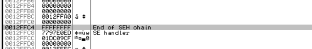
从图中可以看到，第二个结构体的Next成员值为FFFFFFF,所以第二个EXCEPTION_REGISTRATION RECORD结构体也是SEH链表的最后- - 个结构体。异常处理器地址为7717D74D,它位于ntdll.dll模块的代码区域,是OS的默认异常处理器(创建进程时, OS会自动产生默认的SEH )。
添加SEH
运行401005处的指令 查看栈窗口
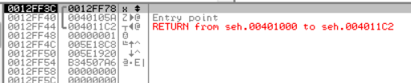
栈中新创建了EXCEPTION_REGISTRATION RECORD结构体 继续运行40100c处的代码 查看栈窗口
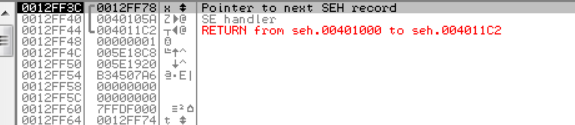
栈窗口出现了新生成的SEH的注释 新的异常处理器就是这样添加SEH链
OD中有查看SEH链的功能（Alt+s）
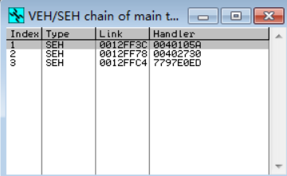
发生异常
如果执行401019地址处的MOV DWORD PTR DS:[EAX],1指令,就会引发EXCEPTION_ ACCESS_ VIOLATION异常(该异常已做说明，此处不再赘述)。此时程序处在调试之中，根据异常处理的顺序，OS会把控制权交给调试器(异常处理器( 40105A)未运行)。在40105A地址处设置断点，然后按Shift+F9组合键，再将异常派送给被调试进程( seh.exe),调试器暂停在设置的断点处( 40105A )。
如图所示，被调试者会调用注册在自身SEH链中的异常处理器来处理异常。设置好断点后，接下来即可调试异常处理器
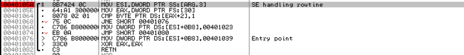
查看异常处理器参数
调用SEH时 栈中的参数如图
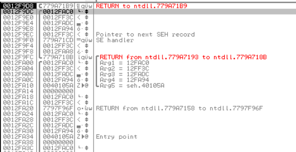
第一个参数（ESP+4）指向EXCEPTION_RECORD结构体的指针pRecord（12fac0） 数据窗口查看：
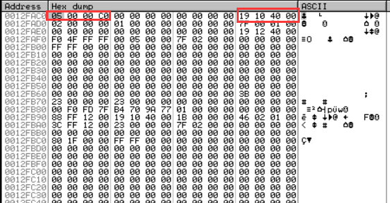
参考图中以及EXCEPTION_RECORD结构体的定义可知 ExceptionCode（pRecord+0）为C0000005 发生异常的代码地址为401019
第二个参数（ESP+8）是指向EXCEPTION_REGISTRATION RECORD结构体的指针（pFrame） 其值为0012ff3c 是SEH链的起始地址
第三个参数（ESP+c）是指向CONTEXT结构体的指针pContext（0012fadc）查看指针pContext所指的地址空间 如图 COntext是一个非常大的结构体（大部分为NULL）其中特别需要注意的是Eip成员它位于结构体偏移B8的位置 存储着发生异常的代码地址
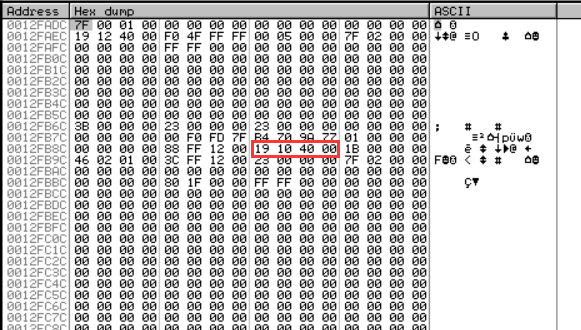
最后一个参数（pValue）（ESP+10）供系统使用 可以忽略
调试异常处理器
40105a地址处的异常处理器中存在着调试器的检测代码 虽然简单 但非常有代表性：1
MOV ESI,DWORD PTR SS:[ESP+0C] ;ESI=pContext
[ESP+c]是异常处理器的第三个参数pContext的值 以上命令用来将pContext地址（12fadc）传送入ESI寄存器1
MOV EAX,DWORD PTR FS:[30]
上述指令用来将FS：[30]的值传送给EAX FS:[30]就是PEB结构体的起始地址
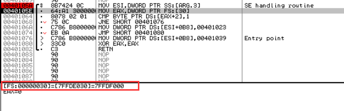1
2
3
4
5CMP BYTE PTR DS:[EAX+2],1
```
上述指令用来读取[EAX+2]zi'jie'zhi地址中的1个字节值 然后和1比较 由于EAX当前保存着PEB的起始地址 所以[EAX+2]指的是PEB.BeingDebugged成员 从图中可以看出[EAX+2]=[7ffdf002]=PEB.BeingDebugged的值为1 表示进程处于调试状态

JNE SHORT 004010761
2若CMP指令的两个对象不同 则JNE就进行跳转 由于PEB.BeingDebugged的值为1 则不进行跳转

MOV DWORD PTR DS:[ESI+0B8],004010231
2
3
4上述指令用来将pContext->Eip值改为401023 异常处理器终止时 发生异常的线程会运行401023地址处的代码 弹出“Debugger detected:(”消息框

在401023处设置一个断点
JMP SHORT 004010801
由于pContext->Eip值改变 所以执行跳转到异常处理器的终止代码处（401080）
MOV DWORD PTR DS:[ESI+0B8],004010391
2
3若程序运行在非调试状态下，则执行401068地址处的JNZ指令,跳转到401076地址处。如上所示，401076地址处的指令用来将pContext→Eip值更改为401039， 401039地址处的代码用来弹出消息对话框，显示“Hello:)”消息文本

XOR EAX,EAX
RETN`
最后两条指令中先将返回值( EAX )设置为0,然后异常处理器返回。返回值0代表EXCEPTION_CONTINUE_ EXECUTION,表示异常得到处理，相关线程可以继续运行
本练习示例( seh.exe)的目的在于向各位展示使用SEH进行反调试的技术。所以在代码中故意引发了异常，然后在SEH中根据调试与否修改了运行分支。若熟悉了该技术，调试压缩器/保护器类的文件时会非常有帮助。
运行到401082地址处的RETN指令时，控制权被返回至ntdlI1模块中的代码区域，它属于系统区域，所以在OllyDbg中按F9运行键后，调试会在401023地址处(设置有断点)暂停。
使用StepOver(F8)指令使调试运行到401031地址处的CALL指令,弹出一个消息框。按“确定”按钮关闭消息框后，执行401037地址处的JMP SHORT 40104D指令，跳转到删除SEH的代码处( 40104D )。
删除SEH
在程序终止前删除已注册的SHE,如图所示。
调试运行到40104D地址处查看栈, EXCEPTION REGISTRATION RECORD结构体存储在其中( 12FF3C ),该结构体是SEH链中最初运行的异常处理器。40104D处的POP DWORD PTR FS:[0]指令用来读取栈值( 12FF78),并将其放人FS:[0]。FS:[0]是TEB.NtTib. ExceptionList, 12FF78就是下一个SEH的起始地址。执行该命令后，前面注册的SEH ( 12FF3C )被从SEH链中删除。然后执行401054地址处的ADD ESP,4指令,将栈中的异常处理器地址( 40105A)也删除。请各位反复调试，查清栈中数据变化的情况。
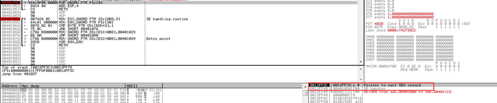
小结
SEH大量应用于压缩器、保护器、恶意程序( Malware ),用来反调试。大家研究与调试SEH的过程中，会进一步加深对Wiondows OS内部结构的认识,提高自身逆向分析技术水平。